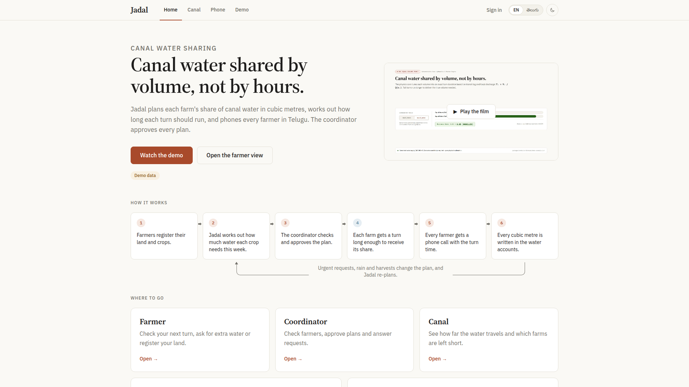
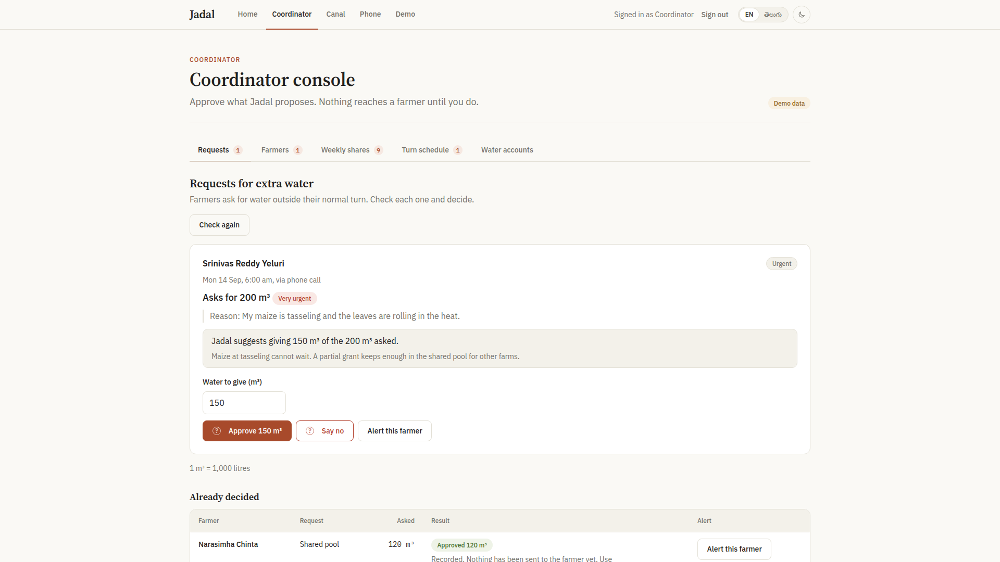
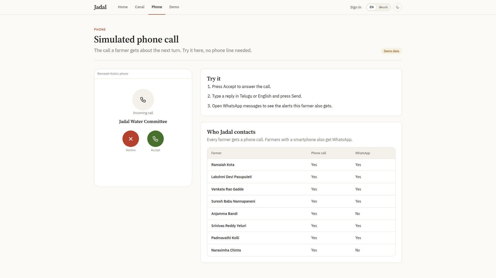

Hours are not water. Open channels lose flow continuously to seepage before water reaches the tail.

Manning open-channel conveyance loses physical discharge from head to tail.
Equal time delivers unequal water. Equal volume requires the tail turn to run longer.
Result: Tail crop is starved by 29.4% seepage loss.
Nothing reaches a farmer until the human coordinator clicks Approve.

Synthesize farmer intake and draft roster schedules
Pure open-channel hydraulics: zero I/O, zero LLM calls
"Nothing reaches a farmer until you do"
Accessible farmer phone calls verified by mathematical double-entry conservation.

Canal water shared by volume, not by hours.